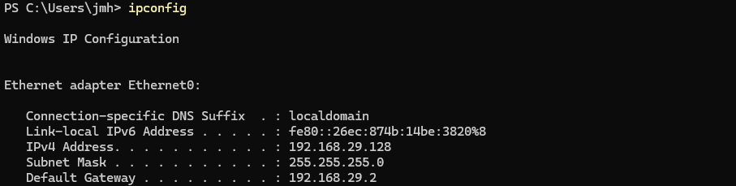
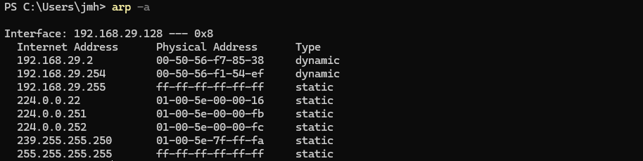
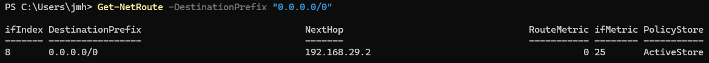
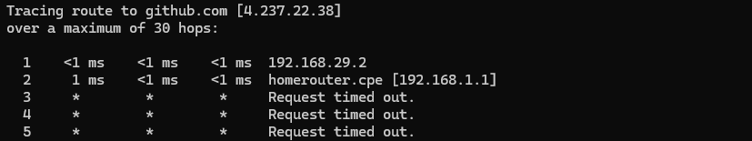
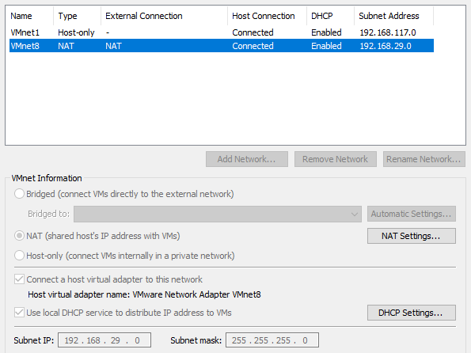

Networking & Virtualisation
IP configuration, virtual machines and NAT
Overview
This project explores how general network traffic travels from an application, all the way to the open internet. I will also be using a Windows 11 virtual machine to demonstrate all this.
In this project, I used VMware tools and built-in Windows tools for networking and investigation to demonstrate how IP, DNS, gateways, subnets, ARP, routing and NAT all work together. And rather than explaining each concept separately I will follow the direct path network traffic takes from my virtual machine, through VMware's virtual network, to my home network, and finally, the internet.
From Application to Gateway
When an application tries to connect to a domain such as github.com, many networking systems are involved before any traffic can even leave the local network.
First we have DNS, which will resolve the domain name into an actual IP address, which then allows the application to communicate with a service on the machine using a port number; for example TCP port 443, which is commonly used by HTTPS.
Windows will then use the destination IP address (obtained earlier) and the local subnet configuration to determine where the traffic should be sent next. If the destination IP address is outside the local subnet, then Windows will send the traffic to the default gateway, in my instance, VMware's default gateway is 192.168.29.2.
I inspected my virtual machine's network config using:
ipconfig
With this information I found out my virtual machine was configured with a private IPv4 address on VMware's virtual network:
IPv4: 192.168.29.128
Prefix: /24 (from subnet mask)
Gateway: 192.168.29.2
DNS: 192.168.29.2The /24 (alternatively written: 255.255.255.0) prefix, plus the IP, is what defines the local subnet and its size. Because internet destinations are outside this subnet, traffic that doesn't have a more specified route will be sent to my default gateway at 192.168.29.2.
It's also worth noting, most of this configuration was supplied through DHCP rather than being manually configured.
Now even before Windows can send traffic to the default gateway over the local network, it first will need the gateway's MAC address. ARP is the technology that will give you it.
I inspected the local ARP table using:
arp -a
ARP's purpose is to map local IPv4 addresses to MAC addresses, it is somewhat like an IP to MAC translator. When your device has an IP address, like the default gateway's IP for example, it needs to "ARP" for the gateway's MAC address so it can pinpoint exactly which device the IP address belongs to, without the MAC address, your device wouldn't really know what to do with the IP; but with it, it can understand exactly who is who, and where to go next on your local network.
Here's the general process so far:
Try to connect to github.com → Ask DNS server to resolve the domain → Receive the domain's IP address → Windows sees that the IP address lies outside your local subnet → ARP for default gateway's MAC address → Connect to default gateway.
Obviously for the sake of simplicity and brevity, there are a few more steps involved than this, but it's the basic picture.
From Gateway to Internet
Now to send network traffic beyond the local subnet and towards the internet, Windows will consult its local routing table to determine the next hop.
I found my virtual machine's default route via:
Get-NetRoute -DestinationPrefix "0.0.0.0/0"
0.0.0.0/0 is the route used when Windows doesn't have a more specific route for the destination. For my case, this route causes the traffic to be sent to the default gateway.
After finding my default route, I used:
tracert github.comto see the route my traffic took beyond my virtual machine.
My first two hops showed me:

So the traffic went from my Windows 11 VM (192.168.29.128) to the VMware NAT gateway (192.168.29.2), then to my home router (192.168.1.1), before finally continuing on to the open internet towards github.com.
Here VMware uses NAT to allow my virtual machine's private (192.168.29.0/24) network to communicate through my host's real internet connection. This allows my virtual machine to access the internet freely without actually being directly connected to my real home (192.168.1.0/24) network.

Takeaways
This project helped me solidify networking concepts I had previously been aware of more separately into one complete process. I gained a better mental model of DNS, TCP (UDP too) ports, IP addressing, subnetting, gateways, and ARP and how they all work together and rely on one another before your internet traffic even leaves your machine and local network.
Following the process in my Windows virtual machine, using PowerShell and other networking utilities, while also examining my virtual machine's virtual network and NAT, made all these networking connections and networking concepts much clearer to me.